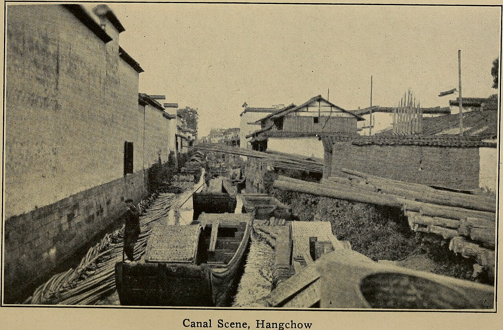

桐庐
/
玩乐地
/
生仙里竹溪探险乐园
生仙里竹溪探险乐园
溪水清澈 · 皮划艇 · 小火车 · 田园卡丁车

桐庐生仙里竹溪探险乐园
建议从携程/App查看最新实拍
竹溪乐园实景 · 照片待补充
溪水浅滩
皮划艇
无动力乐园
网红小火车
项目
详情
地址
浙江省杭州市桐庐县合村乡后溪村
门票
套票约 118–299；部分项目单独收费
营业时间
以景区当日公示为准
特点
竹溪浅水区适合低龄儿童踩水、皮划艇
网红小火车、竹林迷宫 ATV、田园卡丁车
人流量比 OMG 少，更清闲
适合谁
女童踩水
轻松
注意：
离县城较远，约 50 分钟车程。
项目套票性价比高，按需购买。
介绍
生仙里是一片山水田园综合体，竹溪探险乐园有浅滩、皮划艇、小火车和卡丁车，适合不想排队、想慢慢玩水的家庭。